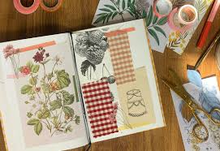
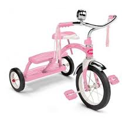
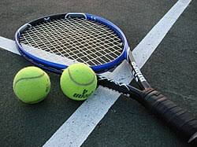

To begin, I am sixteen years old and in tenth grade. My family is Korean and I have a five year old Maltese dog. In my free time, I like to stay at home and relax, which involves scrolling, sleeping, and scrapbooking. I also read and play the piano, but those are more obligations than hobbies. Personality-wise, I am introverted and I prefer spending time alone during the weekends. But I also like talking to my friends and meeting new people, especially at school. I am a very efficient person, so I do not like wasting time do

I was born on September 8th, 2009 in Seoul, South Korea. My family moved to San Diego in 2011 and we have been living here since then. I started kindergarten in 2014 and I remember it being fun. I remember dressing up as Elsa for Halloween and riding a tricycle. Although I was on the quieter side, my elementary school life was very normal. I played with my friends, watched a lot of TV, and read books sometimes. My favorite food was alfredo pasta. My younger sister was also a big part of my childhood because she was the only person I could play with at home. My favorite color transitioned from pink in kindergarten, teal from first to third grade, and then finally settled on purple.

I entered middle school in 2022 at Pacific Trails Middle School. My middle school life was also quite normal. I started playing tennis more often and playing at tournaments. It was not very fun. In seventh grade, I also played the flute in the school band, but I ended up quitting the next year. Eighth grade was a lot more enjoyable than seventh grade because my social life was more stable and I liked my classes a lot more in general. I started high school at CCA in 2024. Freshman year was a good experience because my life was very stable at this point. I joined a few clubs and played on the tennis team, which is a lot of fun. So far, this year is also a pretty good year. With the exception of a few classes, I think sophomore year has been more enjoyable than last year. I also recently got my permit and started to drive.